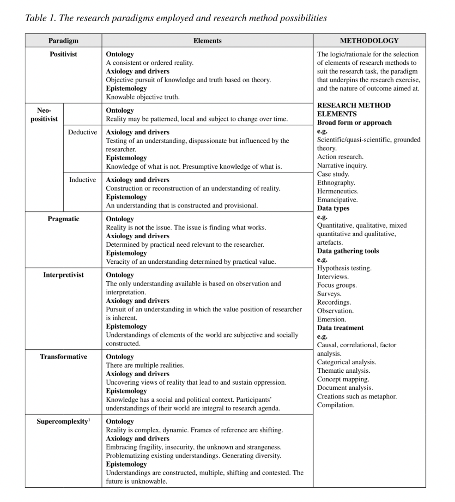
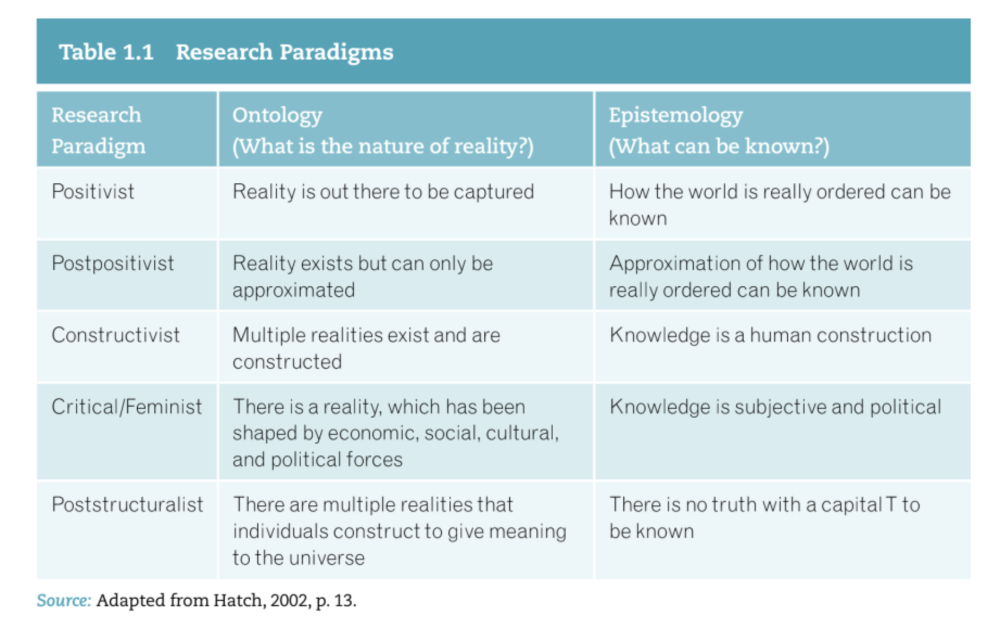
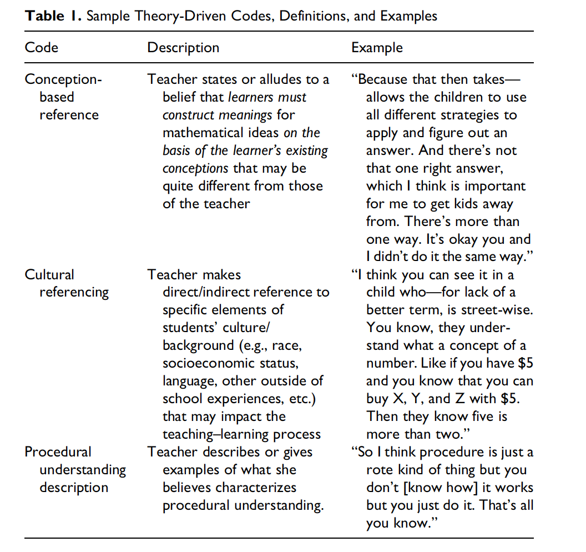

MA dissertation guidance
MA Dissertation Guidance
Ethics content
You must have ethical approval before approaching participants and collecting data. Please check with your supervisor before submitting an application.
You can find detailed information on ethics, including sample applications here.
To help prepare for your ethics application, please register for an account on the Research Ethics Management Application System (REMAS) system here.
The user id is your k number, without the @kcl.ac.uk section.
Reference Management Software
I mentioned using reference management software – there are two free packages that are widely used Zotero and Mendeley. I use Mendeley but Zotero is similar. You can get an add on for your browser that collects information from webpages for Mendeley and Zotero. When you are on a webpage of a journal article, you click the button and it adds all the information about the article to the database. There is also a plugin for MS Word which allows you to add in-text citations as you write - in Mendely and Zotero. I highly recommend citing as you write as it much harder to add all the citations at the end! Mendeley can also be used to organise all the papers you have read and you highlight and make notes on the pdfs within the software.
A rough time plan
Whilst the plan below is not one that needs to be adhered to rigidly (different projects have different timescales) it should you give you some sense of the major milestones on the path to your dissertation submission:
| Timeframe | Tasks |
|---|---|
| December - January | Develop research idea, finalize research proposal, submit ethics application |
| January - February | Prepare data collection tools (submit by end of January); draft literature review (submit by end of February) |
| February - April | Carry out data collection. Work on and submit methods and methodology chapters (submit by end of March) |
| April - June | Preliminary data analysis - submit draft analysis chapter by end of June |
| July | Complete first draft - submit by 25th July |
| August | Respond to comments and submit by 25th August |
Starting out
Find a way to keep a record of everything you have read. Copy and paste good quotations into some kind of organisational system for later use. For my PhD, I just used a big word table, which was fine for searching and copied and pasted good quotes in.
You can use the reference management software below to do this job also.
Key working on drafting your research questions - try different words (e.g. do you want, perceptions or views?) - make sure you have sections in your literature review where the key concepts in your research questions are defined (E.g. if your question is ‘What are teachers’ perceptions of the fairness of A-level assessments for learners of all abilities?’ I would expect the literature review to include sections addressing different models of ‘fairness’; ‘assessment’ ‘ability’ and probably also ‘perception’)
Start to draft out the sections of your literature review. I find it helpful to put the subsection headings into a word file and then fill in as a I find references. For example, for the question: ‘What are students’ and teachers’ views on the introduction of a ‘zero tolerance’ behaviour management system in school X?’ I might include sections such as:
1.0 Defining behaviour management
1.1 Classroom management or behaviour management?
1.2 Definitions focusing on the behaviour of teachers or students
1.3 Towards a unified definition.
2.0 The development of behaviour management policy in the English context from 1990-2016
2.1 1990-2001 The classroom management years
2.2 2001-2010 The permissive decade
2.3 2010-2016 The rise of ‘zero tolerance’
`3.0 The rise of ‘zero tolerance’ schools
4.0 Previous studies of views of behaviour management systems 4.1 Studies of teachers’ views 4.2 Studies of students’ views
5.0 Justifying the need for this study and the research questions
- I would start using free reference management software (see above)
- Try and decide on your methods as early as possible and submit your ethics application early.
- It can be easy just to do lots of reading (and you do need to read a lot) but try and always write at the same time. Try and add a few words to your draft everyday, when you read something new.
- It can be easy just to focus on the substantive literature at this stage, but do, as you develop your research question, look ahead to a) what will my methods be and do some methods reading. When you do your literature reading, do also look at the methods used in the studies - you will need to justify your own approach and if other researchers have done similar studies you can reference them to justify your design and base your interview questions or surveys on their tools. Do also try and think what your theoretical frame will be (Social constructivism? Critical theory? Feminist? Critical realist? etc.) Look at the frames given in papers and see if you start collecting ideas for your methodology.
Research instruments
• Base the tools on previous methods that have been used in the literature. A valid approach is to state, ‘The interview questions have been developed from those used in a previous study, Smith (1998). However, as that study focused on addressing research question X and was in was in context Y, I have adapted Q2 and Q7 as follows…. I have also added…..’
• Do carry out a pilot of your instruments. This is an important step and allows you to develop the instrument. You need to have ethical clearance to do a pilot, but it is good to trial the interview questions or survey on a small number of participants and then include a section in your report where you describe you adapted the tool in response to the pilot. For example, you might ask pilot participants if the language in the questions is clear, and rewrite any that are not etc.
Starting your literature review
• At this stage of writing your literature review, you are still firming up your question - an important aspect is finding literature that points to the need for your study – what literature highlights that there is a problem in the area you intend to study? Does anyone say more research is needed in this area? Do find literature that supports the originality and need for your work.
• I write by setting out subsections of my literature review. Examine your research question and break it down into logical sections. For example, for a research question of: ‘What are the views of secondary teachers on the enactment of new policy guidance on health education in a school in northern China?’ I might expect sections that include:
Setting out the problem – an under-researched recent change to policy
1.1) The nature of educational policy. 1.1.1) How is policy defined?
1.1.1.1) Model A of policy (Policy as an imposed set of rules). Critique of Model A
1.1.1.2) Model B of policy (Policy as a changing social construct)
Critique of Model B
1.1.1.3) Synthesis – the model of policy adopted in this research
Limitations of this model
1.1.2) Defining policy enactment
1.2) International policy on health education
1.2.1) Examining definitions of health education – a broad construct
1.2.1.1) Definitions focused on the body
Critique of bodily models
1.2.1.2) Definitions focused on the body and the mind
Critique of bodily and mental models
1.2.1.3) A new synthesis definition of health education
1.3) Justifications for health education policy
Critique of proposed justifications
1.4) Strategies for health education policy
1.5) Challenges for implementing health education policy
1.6) Studies into teachers’ views of health education policy
1.7) The Chinese education policy context
1.7.1) The new Chinese health education policy
1.7.1.2) Policy selection and critique strategy
1.7.2) Challenges for policy implementation in the Chinese context
1.7.3) Previous studies into the implementation of health
Research questions
Work on your own set of subheadings – these can make writing feel more manageable as you aren’t facing a big blank page but can just address shorter sections. You can also paste good quotes and links to papers for each section into the document as you do your reading – it is important to develop a good system for recording your reading so you can find papers and good quotations later.
Do add citations/references as you are going along – it is much easier than doing it at the end.
For any key terms in the research question – for example, in the example above key terms are ‘policy’ ‘implementation’ ‘health education’, the concepts should be defined in the literature. To define a key concept properly should take an extended piece of writing. You should introduce multiple models of the term from the literature. You might include a search strategy for how you found such definitions (for example, I enter the terms ‘health education’ OR ‘health literacy education’ OR ‘teaching for health’ into the ERIC database). Then try and develop some categorisation for what different models exist – for example, definitions of this term fall into two categories, before critiquing them and developing your own model – it is important there is an explicit statement of: ‘In this thesis, I will take the term ‘health education’ to mean….. This is a development of Jones and colleagues’ (2000) model but includes a novel focus on….’
The most important thing to hold in mind in the literature review is - good literature reviews do academic work. Weak theses have literature reviews that read like a list or are just descriptive of other researchers’ views. So they say, author X says this…., author Y says that…. It is purely a report. Work on developing some kind of argument that adds value in the literature review. This can happen in a number of ways:
• Categorise studies in a novel way – you might argue that, for example, previous research on university students’ views of conflict have fallen into three categories (which you then set out and examine) and then argue that a fourth category is missing or that the categories can be integrated.
• Critique the assumptions of previous studies, it might be that the research programme to date has been based on a mistaken assumption, too narrow a conceptualisation, weak methods. Point out what is missing in the existing literature (this shouldn’t become too formulaic – it can be a bit grating when a student wants to point out one flaw for every paper they cite). • Develop a new model – it might be that there are useful conceptualisations that already exist. For example, the concepts of deep learning and understanding might be useful for describing a type of learning that goes beyond memorisation. But the concepts might be poorly defined, and you want to map out how they overlap. A diagram can be really useful for showing the relationship between the existing conceptualisations – like this one (from my PhD Thesis!):

There I am attempting to do work in my literature review by showing the models that exist but pointing out that there is a lack of a unified concept. Conceptual diagrams like this, which are often at the end of the literature review and lead into the research questions, can be really useful for reducing a complex set of literature to an easily understandable representation.
• Report a debate and come to some synthesis. In some areas of research, you might find a debate between two groups of scholars which you can introduce in the literature review. For example, those who believe that student-centred teaching is effective versus those who favour a teacher-centred approach. You can then set up the literature review as contributing by describing and critiquing the arguments of both sides, in a balanced way, and then suggesting a synthesis or third way forward.
When you send me your literature review, do consider what work has been done in your review. In reference to learning, Jerome Burner argues students who have learned deeply should go ‘beyond the information given’ – the same is true of a good literature review – it does more than just stating what previous research has said but presents a new way of looking at what has been written.
You may find these blogs useful background reading:
Pat Thompson - five ways to structure a literature review
Preparing for interviewing
Aim to base your interview questions on existing questions from previous studies. It supports your argument if you can say, the interview questions were based on those used by Smith and colleagues (2000) but have been adapted to the research questions of this study as follows…. Do consider some warm up questions to establish rapport that might ask about current role, or experiences, especially with young people establishing trust and an easy conversational atmosphere is important.
Second, reflect on your questions and think a) will these provide information that answers my research questions? Go back and check that the interview questions actually cohere with your aims - it is easy to go off track; b) aim to have the most open questions possible that stimulate discussion. It can be useful to have a set of questions that approach the same concept from different angles which might feel slightly repetitive but can encourage interviewees to talk. Especially for younger interviewees, it can be hard to express complex ideas in response to an open question. For example, if you ask a younger student: ‘What do you think about your science lessons?’ - They may respond ‘They are great’ or ‘I don’t like science’. Think about alternative ways of getting to the same point that will encourage an extended period of talking from an interviewee, for example: ‘Describe what happens in a typical science lesson and put those features on cards - now tell me what you think about each card’. Apart from for biographical information, closed questions tend not to be that useful. Do consider support to encourage discussion including: card sorts, and putting abstract questions into more practical case studies (so in addition to a general question, how well is behaviour managed in your school? Can you describe some incidents when your teacher managed behaviour well or badly? etc. or ‘Here is a picture showing a student misbehaving in class - how would your teacher react?’). Sometimes posing a controversial option and asking the interviewee to disagree can be a powerful approach - ‘Examinations are pointless and stress-inducing’ - do you agree with this claim? Say something about why or why not?
Third, once you have ethical approval, make sure you pilot your questions. Do give out an information sheet and consent form to the participant. This should ideally be a similar type of participant (i.e. same age, role etc.) as for the main study. This gives you an opportunity to practice all aspects of the interview, but at the start of the process you can flag you will ask questions such as: * Were any questions unclear? * Did you understand all the terms in the questions? * Were there any issues related to the topic that you felt you would like to have raised by my questions didn’t probe? * Did I move too quickly or too slowly in any section? Note that the pilot interview data won’t form part of the main body of your data collection but will be used in the methods section to support the design.
Do practice with audio recorders or the Teams recording feature. Perhaps have a back-up recorder. Losing a recording due to technical failure is not a nice feeling (I have had it happen to me!).
You might want to reference these papers here: Kim, Y. (2011). The pilot study in qualitative inquiry: Identifying issues and learning lessons for culturally competent research.Qualitative Social Work,10(2), 190-206. Turner, D. W. (2010). Qualitative interview design: A practical guide for novice investigators. The Qualitative Report, 15(3), 754-760.
Fourth, there is a real skill to listening when doing an interview. When I first started interviewing, I was very focused on getting through the questions and forgot to listen carefully to responses. In a semi-structured interview, it is so important to respond what is said. I have data sets with some intriguing comments that I missed in the moment and wish I had asked the interviewee to say more about. It is better that there are a few pauses and that you really focus attention on the interviewee, listen to what they are saying and follow up. Try to reduce the time you talk, on the recording that won’t be as useful as the interviewees’ voices.
Literature that may be useful:
Kvale, S., & Brinkmann, S. (2009). Interviews: Learning the craft of qualitative research interviewing. Thousand Oaks, Sage.
Kvale, S. (2008). Doing interviews. Thousand Oaks, Sage.
McGrath, C., Palmgren, P. J., & Liljedahl, M. (2019). Twelve tips for conducting qualitative research interviews. Medical teacher, 41(9), 1002-1006.
Turner, D. W. (2010). Qualitative interview design: A practical guide for novice investigators. The Qualitative Report, 15(3), 754-760.
Useful blogs: Imperial College Interivew Best Practice
Developing a writing Plan
As you continue working on your literature reviews, I highly recommend developing a writing plan. When I was working on my thesis (and working part-time as a teacher - so I empathise with your challenges!) I set myself targets to complete each week. I started by writing out the subsections of my literature review as below:
The problem: students learn facts in science without understanding (750 words)
Literature review 1.0) What is learning?(300 words) 1.1) Behavioural models of learning (500 words) 1.2) Cognitive models of learning (2500 words) 1.3) Social models of learning (1000 words) 1.4) Towards a synthesis model of learning (1000 words) 2.0) The nature of knowledge and understanding in science (500 words) 2.1) The Platonic definition of knowledge (1000 words) 2.2) Critiques of the Platonic model of knowledge (500 words) 2.3) The nature of understanding (1000 words) 2.3.1) Understanding as explanation (500 words) 2.3.2) Understanding as modelling (500 words) 2.4) Constructions of the difference between knowledge and understanding (1000 words)
I initially set myself guidelines for the number of words for each section - these would often prove to be wrong and need to be adjusted - but it was good to have an initial target that added up to the total of the literature review. As I read more, or my research question was tweaked, new sections were added or sections were lengthened or shortened.
It is important that, all key terms in your research question are defined and have extended sections in your literature review addressing them. So if your research question is: What are teachers’ views of effective pedagogic strategies for addressing students’ misconceptions of climate change? - the terms ‘views’ ‘pedagogic strategy’ ‘misconception’ and ‘climate change’ should certainly have sections focused on them. Those terms should be defined.
In a thesis, definition doesn’t simply mean stating what a term means in a sentence, for example:’ A misconception is a belief held by a student that differs from the scientific model (Driver et al., 1994)’. Definition requires introducing and critiquing the models that exist in the literature and developing some novel synthesis. It can be useful to put organise the existing definitions of a concept into some taxonomy or categorisation. For example:
| Assumption | Description |
|---|---|
| Ontological assumption | • An external reality exists |
| Epistemological assumptions | • Knowledge of external reality is partial and personally constructed |
Broadly, conceptual change has been thought of in two ways: a) as change to stable theory like structures (Vosniadou, 2008) or as change to a collection of loosely related knowledge elements (diSessa 1993). In Vosniadou’s model it is assumed that …. [Detailed description of model A]. Vosniadou’s model has been critiqued on the basis that knowledge structures differ from scientific theories (Citation and further discussion). Such critiques led to the development of alternative models of conceptual change…. Disessa’s model (1993)…. [Description of model B]. This model is predicated on the claim that …. This assumption has been critiqued by …. Whilst these two models have been constructed as mutually exclusive (Disessa, 2008), an approach to synthesising the claims of both exists. Knowledge can be conceptualised as existing in a state intermediate to the structures and elements proposed by Vosniadou and diSessa and hence in this thesis, I will define conceptual change as: ….. This definition moves beyond existing models because ….
Note that: the key concept is defined, existing models are critiqued (not just introduced) and a new model is proposed. Weaker literature reviews are simply a list: this author said A, this author said B. The best literature reviews critique and synthesis to do academic work by creating new concepts, models or taxonomies.
Once you have the plan for your sections, you might then set out dates for when you will achieve a draft of each section:
By 26th April - Complete section 1.0-1.2 (3300 words) By 3rd May April - Complete section 1.3+1.4 (2000 words, running total 5,300 words)
etc.
A plan like this can make sure you are on track to submit by the deadline. Do bear in mind that, once you have completed a series of sections, it takes some time to go back though them and make sure they all cohere as whole. The same is true with your final draft - once you have written all the sections, the literature review, methods, data analysis etc. - it still takes quite some time to make sure a coherent argument flows through each section. Do budget time for making the sections run smoothly together - this is some of the most important work of writing. The best thesis have a logic that is present in each section; weaker dissertations feel like a set of distinct sections that don’t fit well together.
Remember that the final dissertation is due on the 26th of August. The latest point at which it would be sensible to send me a draft will be the 26th of July. That gives me time to read your dissertation carefully, and you time to respond to any changes (I will always have a lot to say and you need time to respond to my comments, they may involve adding or significantly rewriting sections). Please do plan to have your first full draft (i.e. with all the sections complete and of the full length) finished by the end of July.
The thesis
Two interesting reads on the theme of the thesis are: What examiners do: what thesis students should know and Advice for writing a thesis (based on what examiners do)
Methods
The methods section is probably one of the more straightforward sections to write. The key aspect of a good methods section is that every design decision has been thought about, discussed and justified with reference to the literature. Typically, a methods section might start by referring back to the research question and discussing an appropriate approach addressing the problem (for example, as the research seeks to uncover the complex and multifaceted factors underlying teachers’ decision making related to behaviour management, an approach that can uncover the detail of personal processes is required (Holstein 1995))
Next, define the method (e.g. Interviews may be conceptualised as a process in which knowledge is constructed in the interaction of the participants (Kvale 2007). This is a good point to link back to your methodology to indicate coherence between your methods and assumptions. For example, the definition of interviews given by Kvale above coheres nicely with a socio-constructivist model of knowledge. As in other places, it can be useful to introduce 2/3 different models of the tool (Smith argues interviews are X. Jones, by contrast, emphasises….) and then present some kind of coherent synthesis of those approaches and how you will understand the term.
Then justify design decisions by reference to the literature. For example, in interviews - why did you choose to use a structured or semi-structured approach? How did you select questions (do refer to a previous study and describe how you adapted their questions)? How did you decide on the length of the interview? Ideally, the interview should have been piloted and you could introduce data from that pilot and describe how you edited the protocol based on feedback (do refer to literature that suggests piloting is a good idea). Do include the questions in an appendix. Similarly with a survey, all your design decisions need to be justified (What did you base your questions on? Refer to a previous existing tool. Why did you choose to use an open-ended or Likert response for a particular question? How did you decide on the number of questions? How was the tool validated? etc.). The key aspect of a good methods section is all your decisions about choices within the method are well justified from previous literature.
Then critique your approach - how have previous researchers criticised the use of your tool to collect data - and then respond to those criticisms. For example, interviews have been described as ‘subjective’ and hence unreliable forms of data collection, however, in a socio-constructivism model of research, subjectivity is seen as a strength, reflecting the nuance of social knowledge construction, rather than a weakness or flaw.
Include a section describing and justifying your choice of sample and discussing how that choice may shape your data. In qualitative research discussion of purposeful sampling (Patton 1990) is typical. If you are basing your study on a small number of cases then it is important that the selection process, and the nature of the cases, are described in detail (Taber 2000) Do discuss how your choice of sample colours your data - do avoid an overly critical stance - all data is influenced by the data selected, so I avoid terms such as ‘biased’ but do provide some consideration of how your selection of participants’ might affect the responses you receive.
If you are doing interviews, do discuss the process of transcription as an aspect of analysis - what choices did you make about transcribing pauses, or ‘ums’ and ‘ers’ in speech? Do you feel they are significant? Did you transcribe non-verbal gestures if you had a video recording? If your interviews are not in English, do discuss the process of translation and how this may impact the process of making sense of participants’ ideas - you might discuss how a key term, such as ‘wellbeing’ can be translated.
Methodology
You can read the methodology section of my PhD thesis as an example (this is longer than you need but gives a general idea of what you are aiming for). You can also read a strong methodology section from an MA dissertation last year which is probably more useful.
• Start the section with some definitions of methodology and why methodologies are typically included in educational research projects (Unlike in subjects like physics, where there is general agreement on assumptions about the nature of research, in the social sciences there are many different approaches to understanding research and interpreting collected data, so it is important researchers give explicit statements of their assumptions).
• Then set out your assumptions in the following areas:
- Ontology – different researchers make different assumptions about reality. Some people assume that concepts like social justice and equality are real entities that exist in the world (for example, you might argue that degree of inequality is a variable that exists in the world, a bit like someone’s height might be thought to have a real existence in the world), others believe they are constructs of the human mind. Begin the section by defining what ontology is is (i.e., assumptions about what entities exist). Then describe a number of different models of ontology (see my methodology for examples) and state your assumption in the case of this research.
You can find tables like this that list different ontologies you might adopt (Ling and Ling 2016, 26)

Or a slighty simpler version here (Lochmiller and Lester 2015, 13)

For example, you might adopt a positivist ontology because you feel that the concept you are interested in, for example, attitudes exist as a real entities, in the same way as a person’s height; or you might argue for a social constructivist ontology and then claim that attitudes are social constructs and only exist in human minds. Once you have stated your choice for your ontology, discussed the assumptions of that ontology, give some critiques of it and argue against them. You might want to describe a couple of different models of ontology (realist, social constructivist, etc) and then describe your reasons for opting for one of them.
- Epistemology – research (and your thesis) is about constructing knowledge claims – but different assumptions can be made about how knowledge is constructed. Some realist researchers assume knowledge is a fairly accurate representation of an existing reality, whilst constructivist researchers argue that knowledge is affected by personal and cultural assumptions, and some post-modernists might argue there is no reliable way to establish secure knowledge. Start the section by defining epistemology. Describe some different positions on knowledge and make a case for what your position will be. For example, ig you write in your analysis that ‘The students I interviewed felt that single sex education supported their desire to be scientists’ what is your assumption about this knowledge claim? Is it a fairly direct report of external reality or a social constructed claim? Then report some criticisms of your chosen epistemology.
• It can be useful to include a summary table like this of your assumptions: Assumptions adopted in the thesis. Ontological assumption • An external reality exists Epistemological assumptions • Knowledge of external reality is partial and personally constructed
• Then describe how you have supported the strength of the work by reporting your quality criteria. Typically three quality criteria are discussed, reliability, validity and generalisabilty. These have different meanings in qualitative research from the physical sciences. First define each of the concepts by reference to the literature - so report two or three definitions of each term, critique them, and state which model of each you adopt in your work: Reliability- the extent to which multiple observers would agree about a study • Validity - the extent to which your description of phenomena match those phenomena • Generalisability - the extent to which your findings can be transferred to other contexts.
Then state how you have worked to support each criteria in your work. For example, you can support reliability by using multiple coders to check the manner in which the transcripts have been coded. Validity ca be supported by quoting sections of interviews in detail so readers can make their own decisions about the extent to which your conclusions are supported by your data etc.
You might find this paper a useful basic introduction to the nature of a methodology: Scotland, J. (2012). Exploring the philosophical underpinnings of research: Relating ontology and epistemology to the methodology and methods of the scientific, interpretive, and critical research paradigms. English language teaching, 5(9), 9-16. Retrieved from
Data analysis
There are a number of different approaches to analysing data so it is important that you justify and explain in detail your choices. For those of you with quantitative data, the options are more straightforward as you are likely to use descriptive statistics. For qualitative data analysis good places to start looking for approaches to analysis are these two books:
Miles, M. B., & Huberman, A. M. (1994). Qualitative data analysis: An expanded sourcebook. Thousand Oaks: Sage.
Miles, M. B., Huberman, A. M., & Saldaña, J. (2014). Qualitative data analysis: A methods sourcebook. 3rd.ed: Thousand Oaks, CA: Sage.
Typically, your analysis will have two stages. First, you go through your data giving codes to sections of text. Codes are ‘are tags or labels for assigning units of meaning to the descriptive or inferential information compiled during the study’ (Miles & Huberman, 1994, p. 56). For example, when reading through your interviews you might label any point in which the interviewee refers to gender as a barrier with the code ‘gender as a barrier’.
One approach to coding is draw your codes from the literature review – for example, you might report that previous research has referred to a number of factors which you will look for in the transcripts (this is called deductive coding). Probably a more common approach is to read the transcripts and look for themes that emerge, regardless of what the literature has said (inductive coding). That difference is nicely described in this paper:
Linneberg, M., & Korsgaard, S. (2019). Coding qualitative data: A synthesis guiding the novice. Qualitative Research Journal, 19(3), 259-270
Available here
So for example, if I want to inductively code this section of a transcript:
In the context of teaching, I would suggest wellbeing would mean the ability to cope with the emotional strains of the career, the role of a teacher in an English school and the strains, the emotional strains and the expectations that that role puts on you. The ability to cope with that role, and have that role not negatively affect one’s mental health, so that one is able to maintain oneself in that role, and doesn’t decide that the role is too demanding, and too challenging and having too much effect on their mental health.
I might notice the themes of: * Wellbeing as coping – I will give this the code WasC and colour it yellow * Wellbeing as overcoming strains – I will give this the code WasS and colour it pink * Wellbeing as a balance – I will give this the code WasB and colour it green [A deductive coder might have argued those themes emerged from their literature review and looked for them in the text]
I can then code the text:
In the context of teaching, I would suggest wellbeing would mean the ability to cope [WasC] with the emotional strains of the career, the role of a teacher in an English school and the strains, the emotional strains [WasS] and the expectations that that role puts on you. The ability to cope with that role [WasC], and have that role not negatively affect one’s mental health, so that one is able to maintain oneself in that role [WasB], and doesn’t decide that the role is too demanding, and too challenging and having too much effect on their mental health.
I would first go through all your data and develop a set of codes (this is sometimes referred to as a code table and it is good to include your code table somewhere in your dissertation, possibly as an appendix). Here is an example code table:

You will need to go through your interviews a couple of times because you will develop codes as you read through and then will need to do a complete final read through with your updated code table.
Once you have your code table, the second stage of analysis is to group the codes into themes. You want to try and find 3-5 clear themes emerging from your analysis. To ensure the themes are clear try and state the theme in a single sentence. For example, you might have developed the codes ‘social class can make it harder to go to university’ ‘social class harms attainment at school’ and ‘social class reduces access to private tutoring’. You might group those codes under the general theme of ‘Access to university is impacted by social class’. (You can see this grouping of codes into themes in the code table above).
It is useful for an examiner to gain insight into the process of how you developed your themes. Do explicitly talk about how you developed codes, you might describe a code you initially used but then cut as it didn’t appear often in your data, or how you collapsed two themes into one.
When you organise your analysis section by theme, do also look for contradictory quotes, for example the respondent who felt social class was unrelated to access to university and juxtapose that with your general theme.
You may also find these blogs useful: coding qualitative data themes don’t just emerge
There is a useful introduction to coding here
Some people suggest using specialist coding software (like NVivo) for data analysis. My view is that, especially for an MA, but even for a PhD, the time spent learning to use the software is not balanced by any benefits. I did my PhD coding using Excel - simply creating a column for each code and adding in related comments under it:
Writing Tips
Writing Tips
One of the most challenging parts of writing a thesis is writing in a suitably academic register, that means using words and phrases that sound like those used by academics rather than the language used by the general public. This is challenging even for native speakers. I find it often takes me multiple attempts to develop a paragraph. When I started out on my MA and PhD, I assumed that I could write a sentence and it would be done - now I find, I need to go back over every sentence to really hone it - it is rare, in my experience, to be able to write an ideal sentence the first time. Adopt the metacognitive habit of circuiting each sentence, like a reviewer or examiner. Questions you should ask include: a) is my meaning clear? Could a reader misinterpret what I mean? b) Of particular words, is this the best concept? What if I changed this word for a synonym, how would that change the meaning?; c) Is this sentence true? d) Have I backed up any claims with appropriate citation? e) Does the sentence flow clearly from the last and into the next?
As an example, consider my first attempt to write:
Michael Gove (who used to be Secretary of State for Education in England) updated the curriculum to have more facts in it. This has caused lots of issues for schools which have done different things in response to his changes some of which have worked better than others. The Conservative party was keen to introduce more knowledge into the curriculum.
Whilst the final paragraph will finish with the same meaning as this one, there is much that could be improved: a) there is some colloquial/informal language that is out of place in academic writing (e.g. ‘have more facts in it’ ‘issues’); b) it is vague ‘caused lots of issues’; c) It is pushing a particular point of view, rather than presenting a balanced view - ‘lots of issues’; d) the final sentence does not follow in a logical sequence from the previous one.
So I might rewrite:
Policy makers in the Conservative party were influenced by proponents of the knowledge-rich curriculum (Hirsch 1996; Young 2008) leading to the then Secretary of State for Education, Michael Gove’s introduction of a knowledge-based curriculum from 2015 (Ofqual, 2014). The new curriculum has been enacted in different ways in different school contexts leading to a wide range of changes to teaching practices (Spielman, 2017, Young 2018).
Note the more formal language - for example, terms from the literature such as ‘policy makers’ and ‘enacted’. There are now citations and a more logical order - cause of the change, then a description of the change, then consequences. However, the writing could still be clearer as key terms, such as knowledge-rich curriculum and enactment are not defined. My next draft is then:
Policy makers in the Conservative party were influenced by critics (Hirsch 1996; Young 2008) who claimed that current curricula neglected the value of knowledge and argued programmes of study should specify in detail the knowledge that needed to be learned, a knowledge-rich curriculum (Hirsch, 1996). The then Secretary of State for Education, Michael Gove introduced such curricula in England from 2015 (Ofqual, 2014). Researchers who examine how policy is made sense of by schools have argued that teachers can interpret the same documents in different ways, a process referred to as enactment (Ball, Maguire, & Braun, 2012). Knowledge-rich curricula have been enacted variously in different contexts leading to idiosyncratic changes to teaching practices (Spielman, 2017, Young 2018).
It takes a lot of drafts to really strengthen a piece of writing - I am still not happy with that paragraph!
A useful test to reread your paragraph as a critic - try and pull apart your claim. Ask yourself - is this claim really true? Does this sentence follow from the last? What assumptions am I making?
A useful source of support are academic phrase banks
The links on the right on that page take you to different sections depending on what you want to do, for example, if you click on being critical, and then highlighting the inadequacies of previous studies you get this list:
Previous studies of X have not dealt with … Researchers have not treated X in much detail. Such expositions are unsatisfactory because they … Most studies in the field of X have only focused on … Such approaches, however, have failed to address … Previous published studies are limited to local surveys. Half of the studies evaluated failed to specify whether … The research to date has tended to focus on X rather than Y. Previously published studies on the effect of X are not consistent. Smith’s analysis does not take account of …, nor does she examine …
Using such phrase banks can help you write in a more academic register.
If you are looking for a book on academic writing I like ‘Writing for social scientists how to start and finish your thesis, book, or article’ by Howard Becker, which you get online through the KCL library
The discussion
The purpose of a discussion section is to take the major themes emerging from your analysis and to place them alongside the literature. A good way to start the section is to return to your research question and summarise what you have found out. Then look back to the literature and the aim is to open a debate - how do your findings match or contradict the existing literature? It is helpful to return to major theories, or significant papers in your field, and put your findings alongside them. Both coherence and contradiction are interesting - the discussion gives space for you to speculate (ideally supported by citation) on the reasons why your findings match or differ from what has previously been found. The discussion is also the place in which you can present a novel model, framework, theory etc. Here you can introduce your new theoretical framing and explain it, by reference to previous models, and make a case both for its strengths and its limitations.
The conclusion
The conclusion of your dissertation should: a) restate briefly the problem and the research question you were investigating; then b) as clearly as possible summarise what you have found out in the study. Aim to state the findings very clearly in a single sentence so the marker is left with an obvious feeling of what the study has found. I sometime mark theses and, whilst there is clearly good data, there is no summary to bring it all together. Try to state what you have found out in one sentence: ’This study has shown that the six science teachers’ interviewed feel that there is less time for teaching about the philosophy of science in the curriculum and that this loss harms students’ knowledge’. Do word your claims carefully here so it doesn’t sound like you are making universal claims - for example avoid claims such as ‘Students prefer teaching that uses role play’ and state that ‘The majority of the Y10 students in the case study school preferred teaching that uses role play’.
Emphasise what is original in your findings and point the marker to the original element in your work. Don’t expect the marker to work out why your study is original - be explicit here. This can be done by pointing back to the literature. ‘From the literature review it was found that, to date, no studies had examined students’ views on problem solving in the context of learning about nuclear decay problems. This research has rectified that gap’.
Then c) critique your study. Students sometimes find this part hard and feel they need to be overly critical of their study. That is not the case - but no research study is perfect and there are always elements you can critique. You might consider criticising the following aspects of your study: a) the sample - are there significant respondents who weren’t included? b) the tools - are there ways in which your tools imperfectly represented the phenomenon of interest? c) additional sources of data - would different approaches (e.g. surveys, focus groups etc.) have supported the findings? The tone to go for here is not that your research is bad because there are ways to critique it. Take a stance that all research is flawed (Choy, 2014) but that does not reduce the value of the findings provided the author highlights the limitations.
Then: d) Describe the consequences of the findings - this might be at several different scales. For examples, you might report suggestions for changes to practice in school and to wider government policy. Try and be as concrete as possible here. Avoid vague suggestions such as: ‘Therefore, science education curricula should be rewritten’ and be as specific as possible. e) Finally, set our directions for future research, given the research question you have answered, what might be additional research questions other researchers should now look into. This can the take the form of: This research has found out that X therefore further research might expand on these results by asking Y.
Choy, L. T. (2014). The strengths and weaknesses of research methodology: Comparison and complimentary between qualitative and quantitative approaches. IOSR Journal of Humanities and Social Science, 19(4), 99-104.
Formatting and referencing
The last thing you should do before submitting your thesis is to check the formatting and referencing are in accordance with the guidelines (I have added these at the end of this message). Do not under estimate how long this can take. Leave yourself plenty of time to read through (and ideally get someone else to read through to spot simple typographical error) and to do the formatting.
Please do check your referencing carefully. The most common referencing errors I see in submitted assignments are: * Direct quotations (i.e. where you have used the authors’ words in quotation marks) without page numbers. E.g. Smith (1995) argues that: ’schools need to do work to support leaners’. Rather than: Smith (1995, p. 20) argues that: ’schools need to do work to support leaners’. * Missing citations where a claim is made in the text. If you assert some fact it must have a citation. For example, the number of students taking GCSE art has fallen in the last decade. This claim must be referenced. * Inconsistencies in the citation list. Do check that the way in which your reference list is generated is consistent. So if you use the format for a book in one entry of:
Taber, K. (2013). Classroom-based research and evidence-based practice: An introduction. London: Sage Publications Limited.
You don’t then have an entry for another book as:
Taber, K. S. (2009). Progressing science education: Constructing the scientific research programme into the contingent nature of learning science. Springer Science & Business Media, Dordrecht.
(Note the different way in which the publisher and city is given)
- Please check how to reference chapters in edited books. These are probably the trickiest to get right. This has the form
Author, A. A., & Author, B. B. (1996). Title of chapter: Subtitle of chapter. In E. E. E.ditor, & F. F. Editor (Eds.), Title of book: Subtitle of book (edition, pp. first page-last page). City, ST: Publisher.
For example:
Bryson, B., & Winkler, I. R. (1992). What does “oo-day” really mean?. In J. Paul, Current research on semantic competence in creolized Pig Latin (3rd ed., pp. 96-107). Lick Fork, VA: Fourchette University Press.
Even if you are using reference management software - please check your citation list. You might assume that the software will generate the list without errors but often the information is input incorrectly. I use Mendeley and regularly have to make corrections to my citation list.
The guidelines are:
It is essential that your dissertation is well presented. In particular, your dissertation must include the following components:
- Title page – this should show:
The full title of your dissertation Your name as registered Your student number (the number on your student ID card) The title of the MA degree, e.g. MA in Education Management, King’s College London The date (month and year) of submission. The word count 2. The abstract – this needs to be between 150 and 400 words. This is best done when you have completed your dissertation. Your abstract should describe clearly and accurately:
The focus, aims and rationale of your study Your central argument and how it is developed The methods used Your main findings The conclusions reached and the implications of your study for research and/or policy/practice in your field. 3. List of contents – section numbers, title of chapters, page numbers.
References – the dissertation is rounded off with a full, alphabetically arranged list of references, preferably using the American Psychological Association (or Harvard) conventions for referencing. The library webpages have more information on citing references.
Appendices - included when they are discussed in the main body of the dissertation. They might include:
Tables or illustrations.
Source material referred to in the text (e.g. copies of newspaper articles, correspondence, policy documents etc.)
Research tools (e.g. interview guides or transcripts from tapes). If you have more than one appendix, you should call them Appendix A, Appendix B, etc.
Section Checklist
- Before submitting, check that all comments and track changes are removed from your thesis.
- Check that all participants are anonymised.
- Check that all the necessary appendices are included (see appendix section below).
- Ensure you have completed a title page (including, the full title of your dissertation, your name as registered, your student number (the number on your student ID card, the title of the MA degree, e.g. MA in Education Management, King’s College London, the date (month and year) of submission, and the word count)
- Note that the following features are not included in the word count: a) Bibliography/reference pages; b) Appendices; c) Abstracts (executive summaries in the case of the MA International Education dissertation); d) Tables; e) Diagrams; f) Acknowledgements; g) Contents pages; h) Footnotes (although these should not be overly discursive/used where the information should actually have been included in the main body of text. Please remember to follow the recommended referencing style for your programme).
- Check you have included an abstract (The abstract – this needs to be between 150 and 400 words. This is best done when you have completed your dissertation. Your abstract should describe clearly and accurately: The focus, aims and rationale of your study. Your central argument and how it is developed. The methods used. Your main findings. The conclusions reached and the implications of your study for research and/or policy/practice in your field.)
Introduction * Is there a clear setting out of the problem and why it is important? * Does a reader get a clear sense of what the thesis is about and a) the methods used and b) the assumptions of the researcher (i.e. are using a sociological/ gender studies/ constructivist etc. framework).
Literature Review * Is there a clear structure to the section? A good way to check this is to write out all your subheadings and see if they make sense as a story. For example, this seems quite a coherent set of literature review subheadings: 1.1) The gender imbalance in school physics; 1.1.1) Defining gender 1.1.2) Reports of gender imbalance in school physics 1.1.3) The potential societal harm of a gender imbalance 1.2) The reported causes of the gender imbalance in physics; 1.2.1) Societal factors 1.2.2) School-based factors 1.3) Suggested strategies to remedy the imbalance 1.3.1) Teacher based interventions 1.3.2) Whole school interventions 1.3.3) Societal interventions 1.4) The Chinese context 1.4.1) The Chinese secondary education system 1.4.2) The gender imbalance in Chinese secondary physics education 1.5) The problem and research questions
- Are the major concepts in the research questions addressed? (I.e If your RQ is: What are high school students’ perceptions of the fairness of behaviour management strategies in their school? - have you defined certainly ‘fairness’ and ‘behaviour management strategy’ and possible also ‘perception’?
- Are their clear definitions of key terms that you will use? Often students do a good job of reporting and critiquing different definitions that exist but don’t then conclude with a statement - ‘Therefore, in this thesis, concept X will be defined as….’
- Does the literature review clearly highlight a gap in the research and so lead to the research questions?
- Are you research questions stated and are they nicely specific? So avoid RQs such as ‘What are students’ views of mixed ability teaching?’ but rather ‘What are the views of 14–16 year old students in a comprehensive school in the southeast of England on mixed ability grouping?’
Methodology * Students are often good at discussing the frameworks that exist but don’t give a clear statement - ‘In this research, I will adopt a realist ontology that assumes that concepts such as gender and class are entities that have some reality and can be, to some extent, objectively measured. I will assume that an empiricist model of knowledge in which information gained from our senses, and in this case the reported views of participants, can be treated as generating reliable knowledge about the world’. * Make sure you have defined the concepts of a) reliability; b) validity and c) generalisability and stated how you will ensure they are maximised in your study.
Methods * For every method you have used (e.g. interviews, questionnaires etc.) have you a) defined the method using the literature; b) given some limitations of the method from the literature; c) described how you have designed your interview/questionnaire etc. based on previous studies. * Set out why your methods are suitable for addressing your RQs. * Given some consideration to ethics (probably by referring to the BERA ethical guidelines). I would at least address the issues (and define each one from the literature) of: a) informed consent; b) ability to withdraw; c) the protection of privacy through anonymisation; d) issues of data handling and storage.
Analysis * You draw on the literature to describe an approach to data analysis (e.g. I will use Strauss and Corbin’s (1998) constant comparative approach. * You have reported some information that shows the reviewer your analysis - for example a coding table * There are a number (3-7) clear themes emerging that answer your RQ * You make use of your data - a marker wants to see as much data as possible - if you have interview transcripts make sure you use plenty of verbatim quotations.
Conclusions * You want to start with a clear statement of what you have found out. In a few sentences state what new knowledge you have found. Do link back to your RQs here to show you are answering what you intended to. * A danger here is overstating your case - avoid statements such as ‘Teachers prefer approaches in which students work in silence’ which imply more generalisability than is the case - instead go for: ‘For the five teachers working in one secondary school in England, the majority reported a preference for students working in silence’. * Do report the limitations of your study * State what the implications of your research are for a) for practice (i.e. for teachers, students, schools, parents etc) and b) at the wider level for national/international policy. * State what further research should now be done
References * Check all the references you have cited are here and that no extra ones exist * Check all references match the appropriate format
Appendices * Make sure you have included all the appendices you have referred to * Example appendices that are typically included are: a) Copies of your consent forms and information sheets (do remove any information that would identify your research sites); b) Copies of your research tools (give the complete list of interview questions, copies of surveys etc); c) Any collected data that you refer to - you might want to include one complete interview transcript (don’t feel the need to include all your data here -it will be too much) or some copies of student work if you collect it; d) examples of coding if appropriate.
Coherence checking
- Do the research questions make sense given the data and conclusions?
- Does the emphasis of the literature review match the findings? Do you need to add any sections to the literature review, given any emerging themes? Is the balance of the literature review suitable for your findings (i.e. are the longest sections of the literature review the same as the longest aspects of the findings)? Are any aspects discussed at greater length in the literature than is justified by the findings?
- Are key terms used in the findings, defined and discussed in the literature review?
- Do the conclusions match the problem raised in the introduction?
- Does the way you analyse and discuss data match your claims about the nature of knowledge and research in the methodology?
- Is the reader sufficiently guided through your argument? Are there appropriate summaries and are new ideas pre-empted before being introduced? Are there any discontinuities where the argument seems to jump?
MA opening thoughts * Expect critique * Need to start early * Good reading and referencing habits * Constant focus on the question * Write as much as possible * Ask for feedback * Know what your students know. Beware of misconceptions. Chunk and dual code complex information. Scaffold and give concrete examples. Use retrieval practice and interleaving for memorisation. Formatively assess. Give opportunities for practice. For understanding: develop connections, practice transfer, self-explain and go beyond the information given. Formatively assess.
Reflexivity Statement https://medicine.unimelb.edu.au/school-structure/medical-education/research/qualitative-journey/themes/reflexivity
Gudiance on Length
16,000 Words
16,000 Words Introduction 500-1000 words Literature review 4000-8000 words Methodology 1000-2000 words Methods 2000-4000 words Findings/Analysis 3000-5000 words Discussion 2500-3000 words Conclusion 1000-2000 words
Thoughts on how to write critically
Criticism can take a number of forms: a) pointing our faulty assumptions; b) pointing out narrow conceptualisations (for example, academic achievement, linked only to exam success) c) indicating alternative values that should be celebrated; d) highlighting errors in logic; e) suggesting over simplifications in an argument; f) and pointing out misinterpretation or misrepresentation of data.
A key aspect of critique is going beyond simply reporting what an author has said. Let us apply this to the Scottish STEM policy document. I started reading through and, on page 3, hit this claim:
STEM skills are of huge importance to the future success of Scotland.
That is not a claim I would take issue with in general, but there is much that could be unpicked. First, why the emphasis on skills? A number of epistemological elements could be thought as contributing to success in STEM, knowledge how, knowledge that, abilities, etc. One might choose to critique that aspect of the claim by arguing:
The report’s authors link success to the acquisition of STEM skills. By contrast a number of authors (cite some here! E.g Boxer) have argued that expertise in science goes beyond skills acquisition and depends on possessing relevant scientific knowledge.
Alternatively, one might take issue with the notion of ‘success’ by arguing.
The policy claims that STEM skills are important for the ‘future success’ (p. 3) of Scotland, but the notion of success is not further defined. National flourishing extends beyond economic success and some countries have proposed measures of national success that extend beyond GDP (cite example like Bhutan. The report’s authors do not define the concept of ‘success’ which is central to the premise that STEM skills are of importance to national flourishing. Recent reports (NAO, 2108) suggest that some areas in the UK experience an oversupply of skilled employees (for example, graduate biologists), whereas other areas have a lack of suitable qualified employees (for example, roles which require technical skills). Without further definition of the concept of ‘success’ the claim that STEM skills, are significant, much less an important aspect of Scotland’s future is difficult to substantiate.
Next is this claim:
This evidence base is not fully developed and identifying gaps in the data was a key objective of this work.
That claim is ripe for criticism:
The authors themselves report their review of evidence is incomplete. An aspect of such insufficiency is seen in the following sections where the authors link to a definition of STEM education in an appendix. However, Appendix One fails to cite any literature for their definition of the concept, a construct that is reported to be much contested in the literature (cite papers that argue STEM is hard to define here). That the central concept of the policy is ambiguously defined raises questions about theoretical and practical suggestions founded on an uncertain construct.